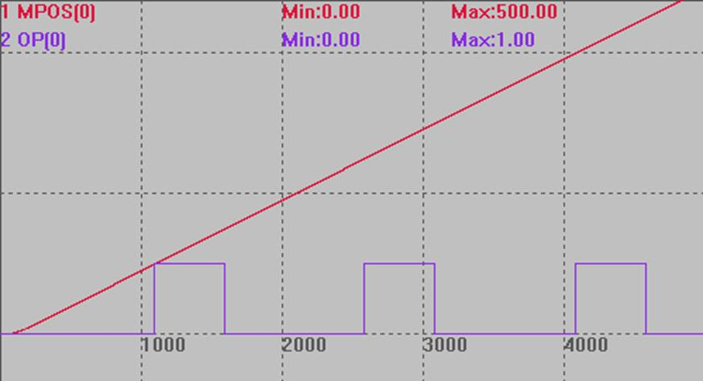
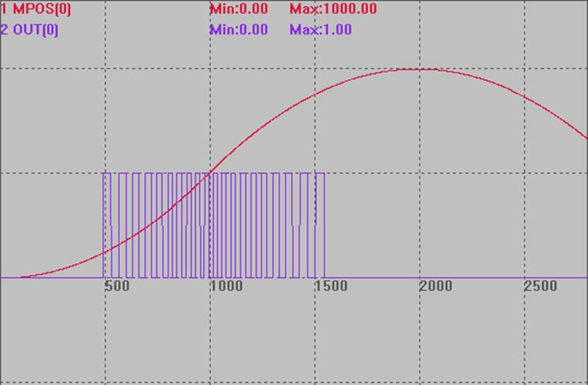
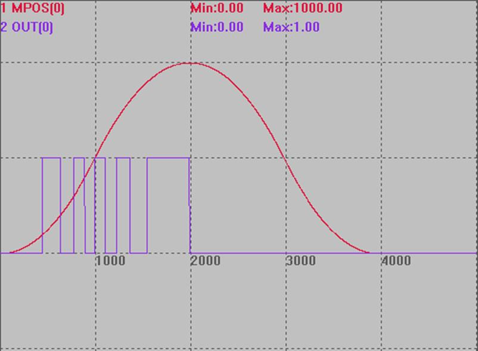
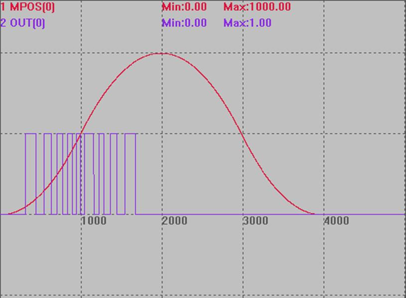
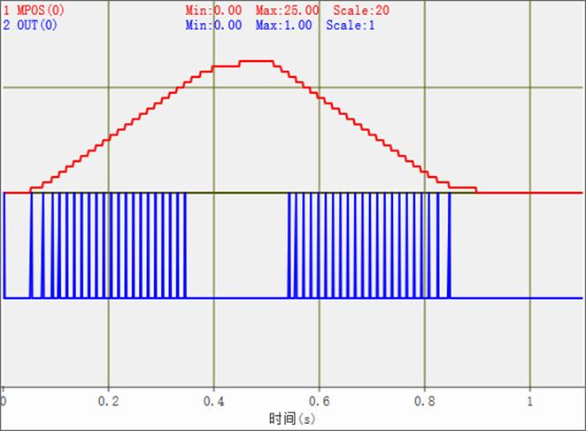

|
类型 |
轴指令 |
|
描述 |
硬件比较输出，不同的轴对应不同的输出口。
缺省轴0-5分别对应输出口0 1 2 3 0 1。总共4个比较输出口。 可以连续调用两个HW_PSWITCH指令，通过函数方式可以获取能调用的指令个数。 每个比较点触发都会使得当前输出口电平翻转。 HW缓冲数1024个，可以连续调用1024个HW指令。 HW指令调用后,不受后面的坐标修改功能的影响，HW指令TABLE存储的坐标必须在调用时是正确的，因此尽量手动修改坐标,要规避HW指令与坐标循环自动修改的随机冲突。 因为自动循环修改坐标不受程序控制，无法确定是在HW的前面还是后面，这样TABLE里面的坐标就无法确定。
此指令仅支持脉冲轴硬件位置比较输出，总线轴请使用HW_PSWITCH2指令。 使用脉冲型电机时只有ATYPE为4时才是比较反馈位置(MPOS)，默认出厂的ATYPE为1或7比较的是命令位置(DPOS)。
240111 ZMC432 增加：HW比较加速 HW_PSWITCH比较输出可以提到每个周期32次，设置4K(250u)周期时，可以支持128kHz的比较速度, 8k(125u) 下支持256kHz的比较速度. ZMC412, PCIE464可以合并支持 |
|
语法 |
HW_PSWITCH(mode, direction, reserve, tablestart, tableend) Buff = HW_PSWITCH([axisnum]) mode：1-启动比较器，2- 停止并删除没完成的比较点 direction：0-坐标负向，1- 坐标正向，2-不判断方向 reserve：预留 tablestart：第一个比较点坐标所在TABLE编号 tableend：最后一个比较点坐标所在TABLE编号
HW_PSWITCH没有比较完所有点的话，一定要设置mode值为2，通过HW_PSWITCH(2)指令停止并删除没有完成的比较点，否则后面此输出通道会工作不正常。
矢量比较：（ZMC432特殊固件支持） !矢量比较固定使用输出口0，支持前6个物理编码器轴。 !必须轴ATYPE为带本地编码器。MPOS响应要够快，否则建议使用HW_PSWITCH2。 !状态每次翻转，必须保证开始OP的状态正确。 !3D矢量比较模式与单轴模式不要混用，可能冲突。 !矢量坐标与VECTOR_MOVED比较，开始运动前建议清零。 !比较轴坐标不要使用坐标循环，或是中途修改坐标
矢量比较语法： mode=5： HW_PSWITCH(5, vectstart, repes, cycledis, ondis) Vectstart：比较点矢量坐标 Repes：重复周期, 一个周期内比较两次, 先输出有效状态,再输出无效状态. Cycledis：周期距离, 每隔这个距离输出Opstate, Ondis后还原为无效状态. Ondis：输出有效状态的距离, (Cycledis- Ondis) 为无效状态距离
mode=6： HW_PSWITCH(6, vectstart, repes, cycledis) Vectstart：比较点矢量坐标 Repes：重复周期, 一个周期只比较一次. Cycledis；周期距离, 每隔这个距离输出一次.
mode=7： HW_PSWITCH(7, tablestart, tableend) tablestart：第一个比较点矢量坐标所在TABLE编号 tableend：最后一个比较点矢量坐标所在TABLE编号
mode=25： HW_PSWITCH(25, axises, num, tablestart) axises：比较的轴数 num：比较的点数. tablestart：第一个比较点MPOS坐标所在TABLE编号, 每个点占用axises个TABLE, 依次存储每个轴MPOS. ！这个方式直接输入要比较的每个点的坐标，自动根据前后点坐标关系来确定比较的方向。对前后有方向变化的运动，尽量使用多个HW_PSWITCH指令写入。
|
|
适用控制器 |
4系列及以上产品，4系列固件20170704及以上 ZMC420SCAN不支持HW_PSWTICH 矢量比较只有ZMC432特殊固件支持 |
|
例子 |
以下例程测试环境：ZMC432，固件：20170709（仿真器无法运行此指令）。 BASE(0) '选择轴0默认输出OP(0) ATYPE=4 '采用编码器位置作比较输出参考点,无编码器改成脉冲轴类型 UNITS=100 SPEED=100 ACCEL=500 MPOS=0 OP(0,OFF) TABLE(0, 100,150,250,300,400,450) 'OP0在MPOS100-150间打开，150-250间关闭，250-300间打开，300-400间关闭，400-450间打开，450后关闭 HW_PSWITCH(2) '停止并删除没有完成的比较点 HW_PSWITCH(1, 1, 0, 0, 5) '启动比较输出 TRIGGER MOVEABS(500)
比较输出图 MPOS(0)垂直刻度200 OP(0)垂直刻度2 
矢量比较例子：（ZMC432，特殊固件支持） 模式5： BASE(0) ATYPE = 1 DPOS= 0 MPOS= 0 SPEED = 1000 ACCEL= 1000 DECEL= 1000 VECTOR_MOVED = 0
HW_PSWITCH(2) HW_PSWITCH(5,100,20,40,20) TRIGGER MOVEABS(1000) WAIT UNTIL IDLE(0) MOVEABS(0) WAIT UNTIL IDLE(0)
比较输出图 MPOS(0)垂直刻度500 OP(0)垂直刻度1 
模式6： BASE(0) ATYPE= 1 DPOS= 0 MPOS= 0 SPEED= 1000 ACCEL= 1000 DECEL= 1000 VECTOR_MOVED= 0
HW_PSWITCH(2) HW_PSWITCH(6, 100,10, 100) TRIGGER MOVEABS(1000) WAIT UNTIL IDLE(0) MOVEABS(0) WAIT UNTIL IDLE(0)
比较输出图 MPOS(0)垂直刻度500 OP(0)垂直刻度1 
模式7： BASE(0) ATYPE = 1 DPOS = 0 MPOS = 0 SPEED = 1000 ACCEL = 1000 DECEL = 1000 VECTOR_MOVED = 0 TABLE(100,50,100,150,200,250,300,350,400,450,500,550.600,650,700,750,800,850,900,950)
HW_PSWITCH(2) HW_PSWITCH(7, 100,117) TRIGGER MOVEABS(1000) WAIT UNTIL IDLE(0) MOVEABS(0) WAIT UNTIL IDLE(0)
比较输出图 MPOS(0)垂直刻度500 OP(0)垂直刻度1 
模式25： BASE(0,1) ATYPE = 5,5 DPOS= 0,0 MPOS= 0,0 SPEED = 100,100 ACCEL= 1000,1000 DECEL= 1000,1000 VECTOR_MOVED = 0 TRIGGER
for i=0 to 22 table(i*2) = i table(i*2 + 1) = i table(100+i*2) = (22-i) table(100+i*2 + 1) = (22-i) next
HW_TIMER(2, 2000, 1000, 1, 0, 0) HW_PSWITCH(25, 2, 22, 0) HW_PSWITCH(25, 2, 22, 100) MOVE(25, 25) MOVE(-25, -25)
比较输出图 MPOS(0)垂直刻度20 OUT(0)垂直刻度1  |
|
相关指令 |